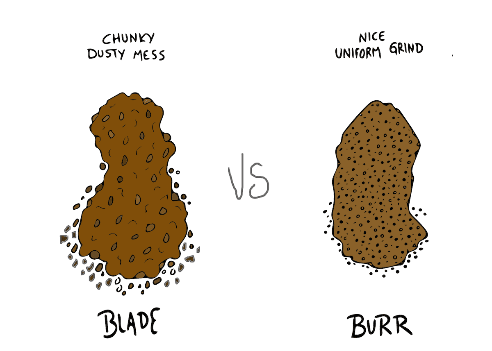

Most home coffee brewing fanatics fail at brewing great coffee before they even begin. They invest in the best coffee grinder they can find and find they still brew average tasting coffee. The worst part: they don’t know why, and It drives them crazy!
The backbone of great coffee = the perfect coffee grounds. Don’t underestimate the importance of grinding.
The coffee grinder is a supremely important link in the chain that extends from the coffee cherry to an exquisite espresso!- Five Senses Coffee
Before you read any further: if you’ve been using a blade grinder for your coffee beans, you’ve been making the most common coffee grinding mistake that exists. Do NOT grind your coffee beans with a blade grinder. Doing so is WORSE than buying pre-ground coffee.
Yes, worse. why?
First of all, the key to brewing a great cup of coffee is consistency, and if your little grinds are not all the same size, some will be over extracted, some will be under extracted, and the result will be, well… shit coffee.
The following seven grind sizes are all you’ll need to brew great cups of joe with a range of different coffee brewing methods.
Yes, you’ll notice some coffee brewing methods falls under more than one grind size category, this is because you can control the outcome of your brew with your grind size + brewing time for certain brewing methods.
As large as you can go on most popular conical burr grinders – similar to ground peppercorns.
If you brew with a French Press, you should know your coarse grind. It should look similar to sea salt.
Not quite medium but not quite coarse – similar looking to coarse/rough sand.
The happy medium of grind sizes; a great starting point for testing your grounds. Similar to the consistency of regular sand.
If you love your pour over coffee like us, you will need a medium fine coffee grind size. It’s finer than sand, but not as fine as an espresso grind.
The most common grind size you’ll come across. When you buy pre-ground coffee, it’s usually a fine grind size (unless otherwise stated). In terms of consistency, it’s a little finer than table salt.
You’ll rarely use an extra fine grind and you need a Turkish coffee grinder to achieve a fine and consistent grind like this. It’s similar to flour or powder in texture.
Yep – you’re a coffee grinding expert now.When you pay attention to the little things – the little things being your grounds of coffee in this case – you reap the rewards of great darn coffee. You have the knowledge, now all that’s left is to choose your grinder, a bag of quality coffee, and you’ll literally taste the improvement instantly!
Happy Brewing!